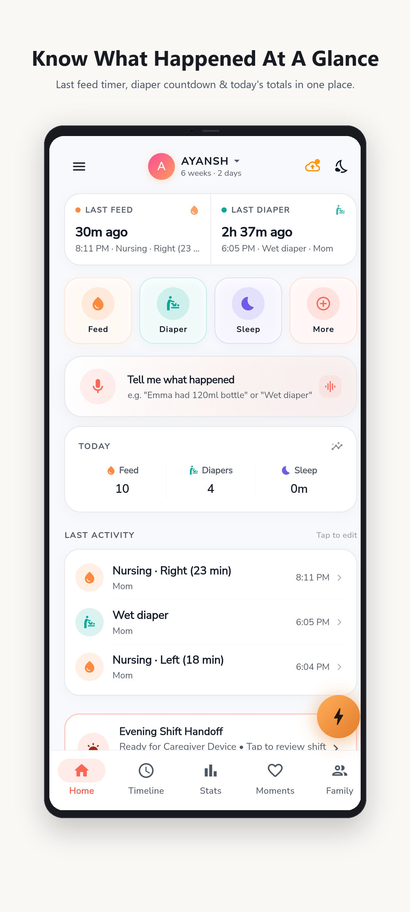

Track feeds, diapers, and sleep in seconds. Keep both parents in sync over private home Wi-Fi without cloud accounts, subscriptions, or data brokers.

Carefully built for clarity at 2 AM, seamless teamwork between partners, and stress-free doctor checkups.
One-touch radial dial placed right under your thumb. Tap Left feed, Right feed, Bottle, or Diaper in the dark without fumbling or typing while holding your baby.
Baby records sync peer-to-peer between Mom and Dad's phones directly over your private home Wi-Fi router. No central servers, no cloud leaks, and zero data brokers.
Bring organized clinical observations to pediatrician visits. Summarize 24h, 48h, or 7-day feeding intervals, diaper frequency, and export a clean PDF with one tap.
Transparent duty split shows who fed and changed throughout the week. Shift summary cards make handover transitions smooth and stress-free.
Speak naturally to log care events when your hands are full. Powered by your device's native speech recognition with zero background listening or audio retention.
Ultra-low glare dark display keeps sleep environments calm during nighttime feeds. Subtle timers won't wake your resting newborn.
Explore the core screens that keep both parents calm and organized.
Experience how quick and effortless baby tracking can be.
Everything you need to know about our local-first approach and privacy.
.babycare) at any time. You can save this file to a USB drive, your computer, or private personal storage and restore it on any new device.